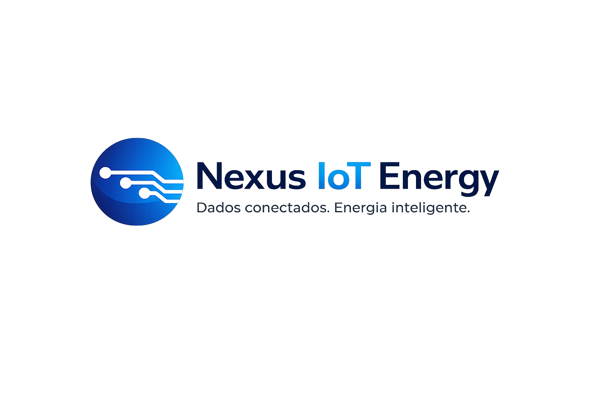

Redução de custos
Identifique desperdícios e reduza custos com energia elétrica e refrigeração.

Monitore energia, refrigeração, alarmes, manutenção e ativos críticos em uma única plataforma inteligente para operações industriais e comerciais.
Identifique desperdícios e reduza custos com energia elétrica e refrigeração.
Antecipe problemas e evite paradas não planejadas.
Receba notificações instantâneas sobre anomalias.
Tenha visibilidade dos equipamentos e dispositivos IoT.
Gere tarefas, acompanhe execução e aumente produtividade.
Dashboards automáticos para decisões estratégicas.
Consumo, demanda, tensão, fator de potência e muito mais.
Alertas configuráveis e classificação de criticidade.
Visão de equipamentos críticos, temperatura e operação.
Ordens de serviço e acompanhamento de atividades.
Indicadores e KPIs para visão completa da operação.
Diagnóstico, previsão de falhas e recomendações.
Integração com dispositivos e protocolos industriais.
Dados seguros e disponíveis em tempo real.
Alertas automáticos antes que o problema gere impacto.
Organize sua equipe e acompanhe cada atividade.
Relatórios e indicadores para reduzir custos.
O Nexus IoT Energy une IoT, energia, refrigeração, manutenção e inteligência artificial para transformar dados de campo em decisões, economia e previsibilidade operacional.
Solicite uma demonstração e veja na prática como podemos ajudar sua empresa a economizar mais e falhar menos.